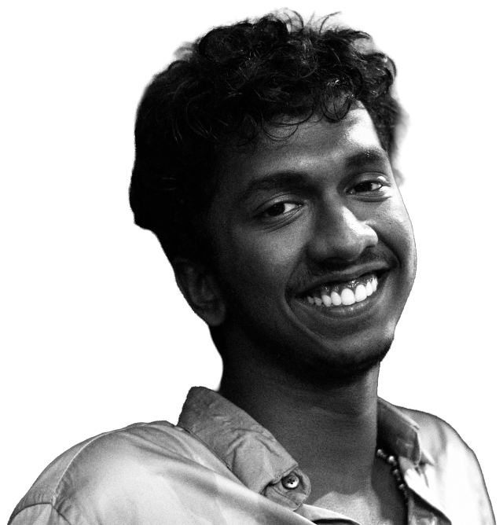

AFTER US!/____
3D ART & WORLDBUILDINGReimagining my college campus (NIFT Kannur) as a quiet, decaying world after an apocalypse.

Exploring 3D worlds, collecting forgotten tech, and creating visual stories.
Reimagining my college campus (NIFT Kannur) as a quiet, decaying world after an apocalypse.

A collaborative NIFT research book and documentary on traditional Kerala handloom weaving at Paravur.

A visual storytelling project inspired by the historical resistance of Nangeli through traditional handloom and natural light.

A late-night mystery time-loop short film made on a 5-day deadline with a ₹2,500 budget.

A precision 3D model of the classic 1980s Japanese medium-format film camera.

Complete 3D film set design, floor blueprints, and mood lighting created for a narrative movie.

An editorial brand study looking closely at Levi's denim culture, copper rivets, and heritage typography.

A 3D modeling study exploring vintage 35mm mechanical cameras, glass lenses, and studio lighting.

A moving mechanical shadow box turning Raja Ravi Varma's Goddess Saraswati painting into kinetic art.

A minimalist luxury perfume store designed with floating glass shelves, stone counters, and warm lighting.

Complete visual identity, posters, and exhibition catalogue designed for NIFT Kannur's graduation showcase.

A detailed 3D model of a vintage mechanical alarm clock with twin bells and winding keys.

A personal photography series capturing coastal backwaters, morning light, and daily life in Kerala.
Specializing in visual direction, 3D spatial worldbuilding, narrative cinematography, publication design, and craft ethnography. Rigorous studio practice spanning visual ergonomics, typography, branding, and contemporary digital narratives.
Foundational coursework in computer science, logic design, programming fundamentals, and mathematics.
Conducted comprehensive ethnographic field documentation of the indigenous Paravur handloom weaving tradition. Directed documentary moving images, photographed manual loom mechanics, and authored the curated print publication monograph Ezhakal.
Directed and shot a suspense narrative short film exploring temporal loops, claustrophobic night-time pacing, and micro-budget cinematography. Engineered low-key lighting setups, soundscape pacing, and tension sequencing.
Core member of the official NIFT Kannur Social Media Team. Active volunteer for annual college cultural showcases and the Spectrum 2023 festival onwards.
Available for select visual direction projects, 3D spatial commissions, and Graduation Project opportunities.